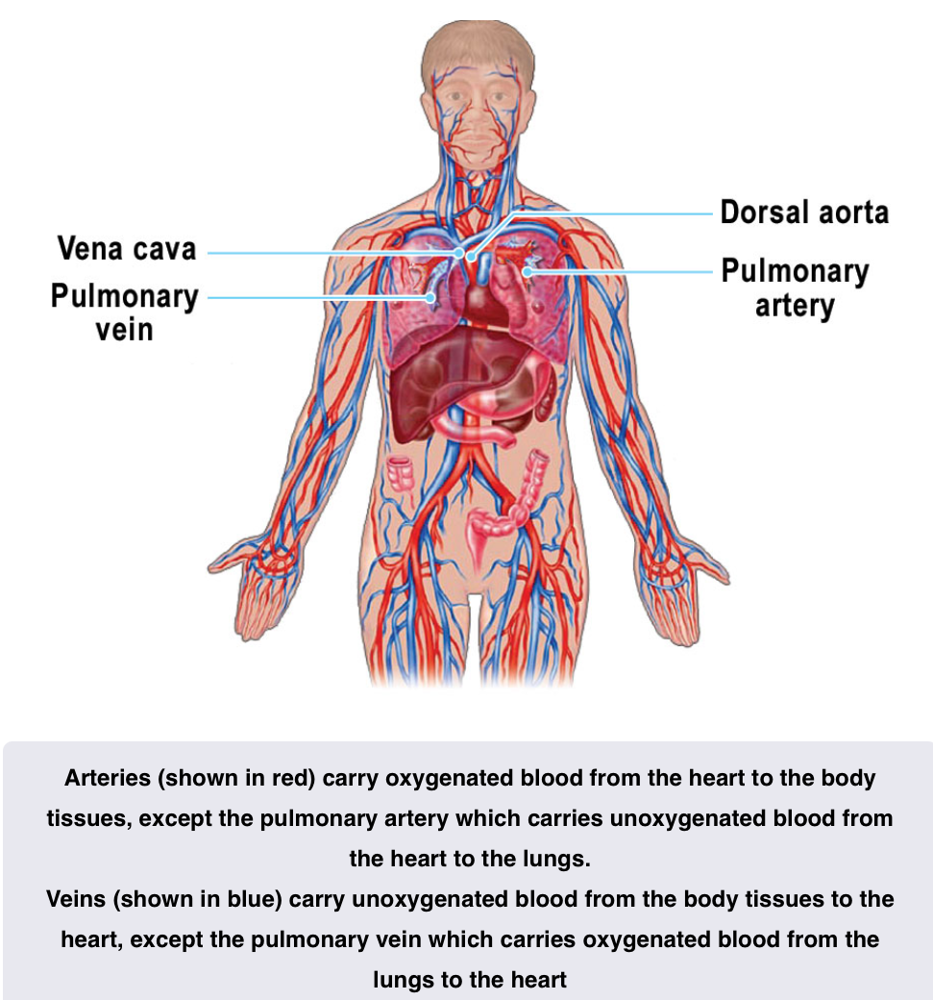
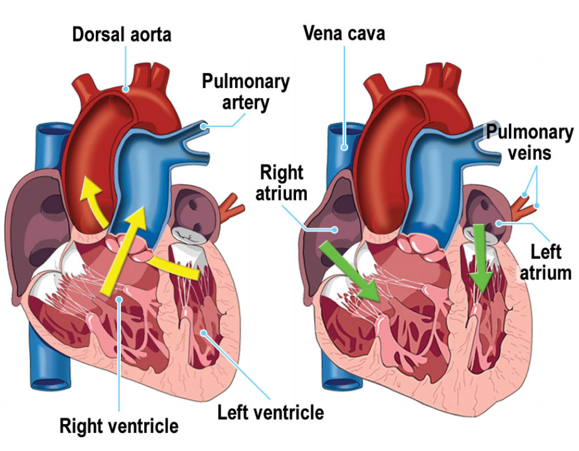

Circulation
The Circulatory System
- Blood is pumped around the body by the heart
- Blood vessels coming from the heart are called arteries
- Those returning blood to the heart are veins
- Arteries branch through the tissues becoming smaller and smaller until the walls are one cell thick
- These fine vessels permeate the body tissue and form the link between arteries, the arterial system, the veins, the venous system, they are called capillaries

The Heart
- The main vessel from the heart to the rest of the body is aorta
- Runs down inside the spine
- Main vessel back into the heart is called the vena cava
-
Vessels going from the heart and back are called the pulmonary arteries and veins respectfully
-
Vessels that supply the heart from the aorta are called coronary arteries
- Coronary veins take the blood back to the vena cava
- Failure of the coronary arteries means the heart can not get enough oxygen
- Heart has 4 internal chambers
- Main and very muscular chambers are called - Ventricles
- Upper and weaker chambers are called the Left and Right Atrium - Or collectedly the atria

- The major contraction of the heart is a contraction of the ventricles
- Blood is pumped from the right ventricle through the pulmonary artery to the lungs
- Blood returning from the lungs collects in the left atrium where it injected into the left ventricle
- Power stroke from the left ventricle pumps blood into the dorsal aorta
- Both ventricles contract together and both atria contract together to give the heart its rhythm
- Pulse is about 72 bpm for a body at rest
- Pulse is controlled by the nervous system which reacts to:
- the amount of glucose in the blood
- the amount of exercise
- the amount of carbon dioxide
- the hormone adrenaline
- Each pump of the ventricle pumps about 70 ml of blood (The stroke Volume)
- Cardiac output is stroke volume * Heart Rate
- about 5L a min for an adult at rest
Blood Pressure
- Arterial blood pressure is sensed by nerves in cavities called sinuses
- there are a pair of sensors in the main arteries to the brain and another on the aorta at the top of the heart
- These are called the carotid sinus and aortic arch pressoreceptors
- Collectedly known as the arterial pressoreceptors
- Blood pressure is regulated by the brain
- varying the amount of secretion of two hormones in response to the pressoreceptors
- Which in turn affects the blood pressure
- pressoreceptors may also be referred to as baroceptors
-
A persons blood pressure depends on
- The work of the heart
- peripheral resistance
- How much blood can flow through the blood vessels
- Elasticity of arterial walls
- Blood Volume and viscosity
-
Systolic blood pressure is the pressure in the arteries as the ventricles contract
- Diastolic blood pressure is the pressure in the arteries when the heart is relaxing between beats
- Both measured in millimeters of Mercury (mm Hg)
- Typical Values are 120 mm Hg systolic and 80 mm Hg diastolic
- Shown as 120/80
Composition of blood
- Blood is a colourless plasma with red and white corpuscles and platelets
- Red corpuscles give blood its color and contains hemoglobin which carries oxygen
- White blood corpuscles are larger but less common - These fight infection
- Platelets help blood coagulate in the air, so wounds can heal
- Plasma is a salty fluid which carries carbon dioxide in solution
- Carbon dioxide in solution forms a weak carbonic acid which helps to maintain the acid balance in the blood
- Blood carries "fuel" in the form of sugars in solution and oxygen attached to the hemoglobin to areas of the body where energy is needed
- Sugars are broken down using the oxygen to release energy
- Releases waste products of Carbon Dioxide and water
- This metabolic process is referred to as internal respiration
Anemia
- Anemia is caused by a reduction in the amount of hemoglobin available
- Reduces the ability of blood to transport oxygen
- Amount of hemoglobin available may be reduced by a reduction in number of red blood cells or reduction in concentration of hemoglobin
- Common causes of Anemia
- Iron deficiency
- Vitamin B 12 deficiency
- Folic Acid deficiency
- Bone Marrow failure - Due to toxic drugs or Cancer
- Blood loss causing iron deficiency
- Inadequate secretion of erythropoietin due to kidney disease
- Excessive destruction of erythrocytes such as in sickle cell Anemia
- Symptoms Include
- Tiredness
- Weakness
- Shortness of Breath
- Increased Thirst
- Feeling about to pass out
- Extreme cases - Noticeably Pale